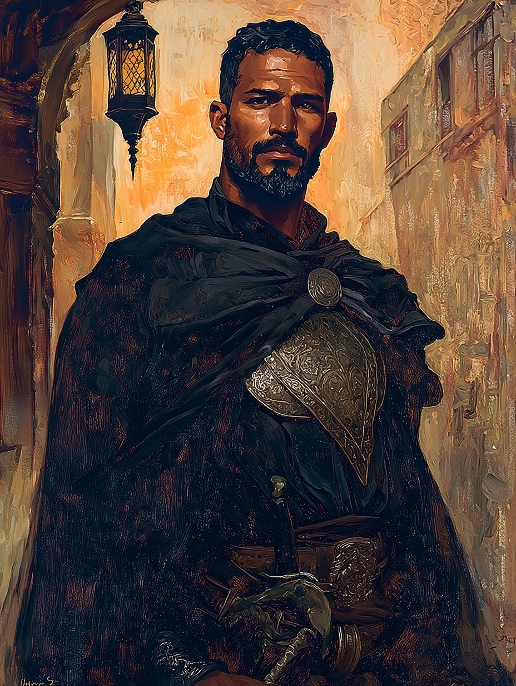

Ibrahim the Silent Sentinel
Warden of the Poorer Quarters · Oath of Silence

Arab · Aged Thirty-Seven
On the Subject
Ibrahim has taken a vow of silence to combat the djinn who plague Constantinople's less fortunate. He walks the city's poorer quarters in armor he no longer takes off, halberd in hand, and where he stops to stand watch the night is quieter — and the morning brings fewer corpses. He does not speak. He has not spoken in seven years.
He projects his thoughts to those nearby in fragments of words and stark images, and most of those he protects have learned to read his stillness better than they ever read men's words. He holds three Tenets of Silence.
Faculties & Saving Throws
Base array 16, 16, 16, 15, 15, 13; Human +1 to each
Bearing in the Field
Skills
| Skill | Bonus | Source |
|---|---|---|
| Animal Handling | +5 | Folk Hero |
| Insight | +5 | Paladin |
| Intimidation | +5 | Human |
| Religion | +4 | Paladin |
| Survival | +5 | Folk Hero |
Tool proficiencies: mason's tools (Folk Hero); vehicles (land).
Class Features
Sense celestials, fiends, undead, and djinns within 60 ft., even through total cover (not behind 1 ft. stone / 1 inch metal / 1 ft. wood / 3 ft. dirt). Djinn detection is the Oath of Silence modification.
Spend from the pool to heal a creature by any amount up to the remaining pool, or:
- 5 points to cure one disease or poison.
- 5 points to end the djinnstruck condition — Oath of Silence modification.
When he rolls a 1 or 2 on a damage die for an attack with a two-handed melee weapon, he can reroll the die and must use the new roll. Significant DPR boost for halberd attacks (1d10) and Divine Smite damage (extra d8s).
Expend a spell slot to deal +2d8 radiant (1st slot). +1d8 vs fiends, undead, or djinns — Oath of Silence modification.
Immune to disease.
Create an aura of silence around himself for 10 minutes. Can use Stealth without disadvantage while wearing heavy armor.
Present holy symbol; target up to 3 creatures within 60 ft. Charisma save vs DC 13. On a failure: silenced for 1 minute.
Note: Channel Divinity has only one use per rest, shared between Unrivaled Silence and The Words, Unspoken.
All Paladin spells cast without verbal components. Spells that have only verbal components substitute somatic instead. He can cast normally despite his vow.
His vow forbids speaking. He can telepathically communicate with creatures within 30 ft.: project words OR images at a primitive level (not for manipulation, only communication). Up to 5 creatures can receive at once. Recipients cannot respond telepathically unless they have their own such ability.
Resistance to thunder damage.
shield of faith, thunderwave
Spells
4 prepared (Cha 3 + half level 1), plus 2 oath always-prepared
| Lvl | Spell | Notes |
|---|---|---|
| 1st | shield of faith | Oath always-prepared; concentration; +2 AC to ally for 10 min |
| 1st | thunderwave | Oath always-prepared; 15 ft cube, 2d8 thunder + push; pairs with his thunder resistance |
| 1st | bless | Concentration; +1d4 to 3 allies' attacks/saves |
| 1st | protection from evil and good | Concentration; anti-djinn/fiend/undead aura |
| 1st | cure wounds | Touch healing |
| 1st | command | Wis save DC 13; one-word command for one turn |
Paladin does not yet have 2nd-level slots; those open at Level 5.
Feat
- When he hits a creature with an opportunity attack, the creature's speed becomes 0 for the rest of the turn.
- Creatures provoke opportunity attacks even if they take the Disengage action before leaving his reach.
- When a creature within 5 ft. makes an attack against a target other than him (and the target doesn't also have Sentinel), he can use his reaction to make a melee weapon attack against the attacker.
The Sentinel feat embodied. With a halberd's 10-foot reach, his threatened area is enormous.
Background — Folk Hero
Common folk will provide Ibrahim with simple lodging and food, and will shield him from those who pursue him — though they will not risk their lives for him. He fits in among the poor and laboring classes of Constantinople and never has to pay for a place to sleep among them.
He stood between a possessed neighbor and the family the djinn would have killed, pinning the possessed body for hours through the night until a priest and a mullah — sent for separately, arriving together — could perform the exorcism. He took the vow of silence afterward. He does not discuss what the djinn made him hear through the possessed man's mouth before it left.
Equipment
- Tabar — halberd stats: 1d10 slashing; reach 10 ft, heavy, two-handed; +5 to hit / 1d10+3 damage. A Turkish halberd of the kind dervishes and woodcutters carry; his is a soldier's-grade weapon, not a working tool
- Yatagan — longsword stats: 1d8 slashing, versatile 1d10; +5 to hit / 1d8+3 one-handed, 1d10+3 two-handed; sidearm for when shield is needed
- Jereed × 4 — javelin stats: 1d6 piercing; thrown 30/120; +5 to hit / 1d6+3; wood-and-metal throwing weapons
- Splint armour — heavy; AC 17, no Dex bonus, Str 15 req — Ibrahim: Str 17 ✓; stealth disadvantage (negated within Unrivaled Silence aura). Reskinned as a heavy lamellar coat over a mail shirt, period-appropriate for an Arab warrior in Ottoman service
- Shield — +2 AC, used with the yatagan sidearm; slung on his back when wielding the halberd
- Holy symbol — a worn brass disc engraved with the Throne Verse (Ayat al-Kursi) in Arabic, worn on a thong against his chest. He runs his thumb over the engraving when he prays. Functions as his divine focus
- Prayer beads — 99 beads, black wood
- Wooden token — from a child he saved during his defining event — kept in a pouch at his belt; he has never returned it
- Mason's tools — Folk Hero; he was a stonemason before taking the vow — useful for examining structures, fortifications, masonry-set wards
- Common clothes — Folk Hero
- Shovel and iron pot — Folk Hero
- Belt pouch
Personality
I move slowly, choose my path before stepping, and never act on the first thought that rises in my mind. The Tenets demand patience, and I have learned to find peace in it.
Those who cannot defend themselves are owed defense. The djinn prey on the poor because the poor have no one. I am that "someone".
Seven years ago, through the mouth of a possessed neighbor I held down for one whole night, I heard something a djinn whispered that no man should hear. I took my vow that morning. If I speak, I do not trust myself to keep the words from coming out.
I judge the powerful harshly and quickly. I have stood between mighty men and the people they would have hurt, and I have never been wrong yet. One day I will be wrong, and I will be late realizing it.
Connections
- Worked with Osman Hamdi Bey on a previous security mission for an Ottoman artifact.
- Has mutual respect for Father Leonidas, seeing him as a spiritual equal.
His silence and dedication make him an ideal guardian for delicate work.